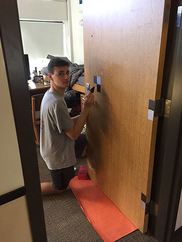
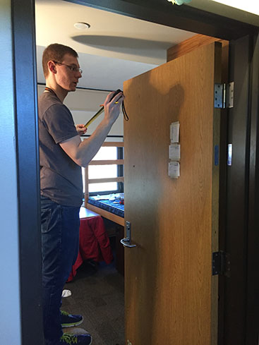
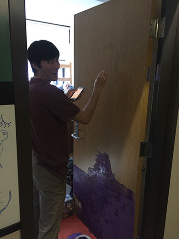
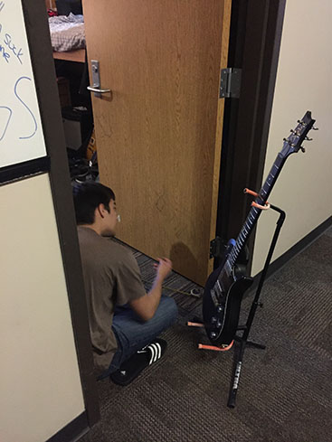
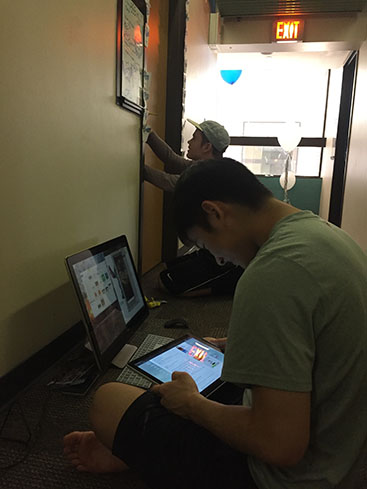
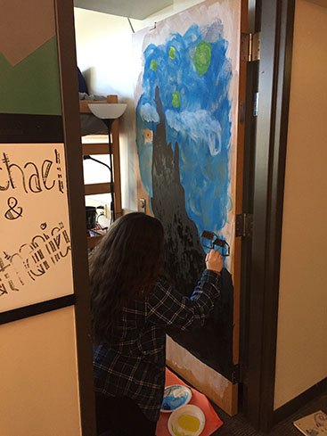
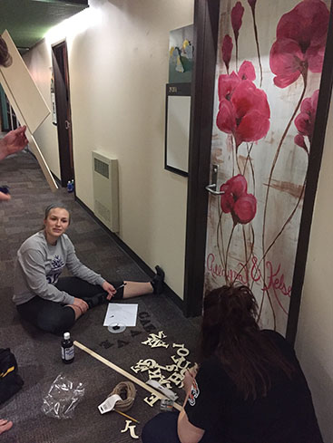

"I really appreciate this."
I'm an RA at RIT, and one of the events I threw for my floor was a "Door Painting Gala". Everyone had the opportunity to paint their doors, and afterward we all went up and down the hall like it was an art gala, talking about everyone's work. To make it feel authentic, I dressed up, put on some lounge style jazz music, and carried a platter of cheese cubes and toothpicks around. I loved the idea and I wanted to make it as hilariously over-produced as possible. Afterward though, a resident came up to me and said how uch he really appreciated it, and I grinned from ear to ear for maybe a day.






